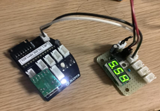
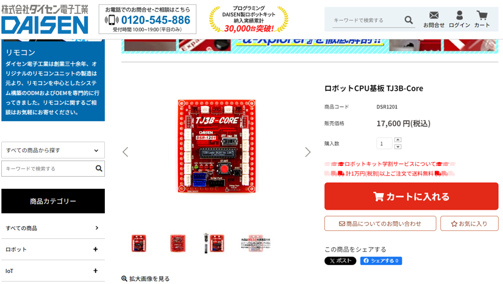
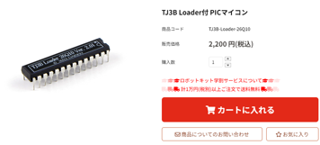
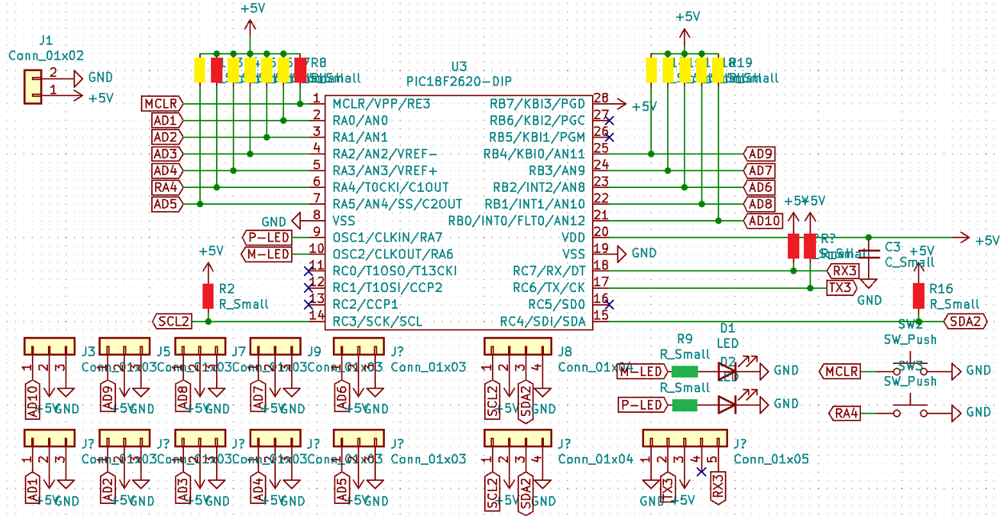

自作TJ3B
・TJ3Bとは
TJ3Bとはここでは「株式会社ダイセン電子工業」の販売するマイコンボードのことを指します。初心者でも始めやすいマイコンボードで、私たちのチームでも以前、 ロボットのマイコンボードとして使用したことがあります。
・値段が急上昇中
最近の半導体不足が原因なのかわかりませんが、数年前までは数千円でしたが現在では１万円を超えています。また、ここ最近では一時期、在庫がない状態がずっと 続いていました。
↑2024/2/6現在の販売ページ
・PICマイコンだけだと安い！
↑2024/2/6現在の販売ページ
なんとTJ3B Coreに搭載されているPICマイコンだけでは値段が約８分の１程に抑えれます。しかもこのマイコンボードは、回路図がインターネット上に公開 されており、それを元に造ればオリジナルのTJ3Bをつくることができ、しかも費用を安く抑えることができます。
・回路図
インターネット上に公開されている回路図を用いて自作TJ3Bの回路図を作ってみました。
↑Kicadで作成した回路図
公開されている回路図から使わない機能を省略すると、こんな感じになります。図中の赤色の抵抗は10kΩ、黄色は100kΩ、緑色は330Ωです。 コンデンサについては、自分は積層セラミックコンデンサ0.1μFを使用しました。電源部分を自作したい方は、お好みで三端子レギュレータ等を使用するなどしてもいいと思います！